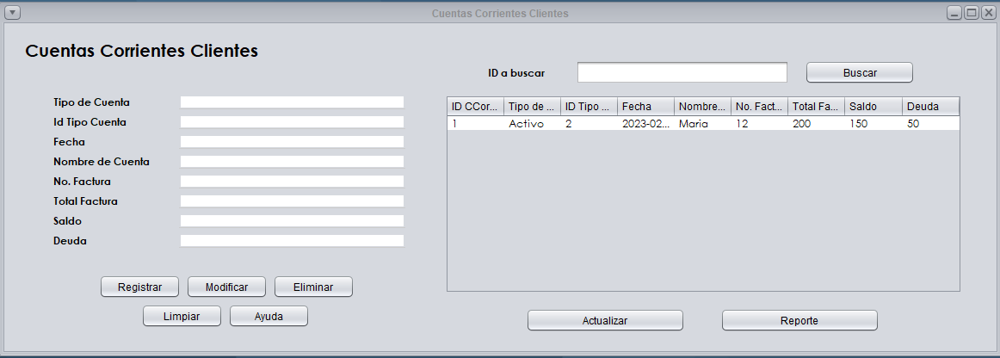
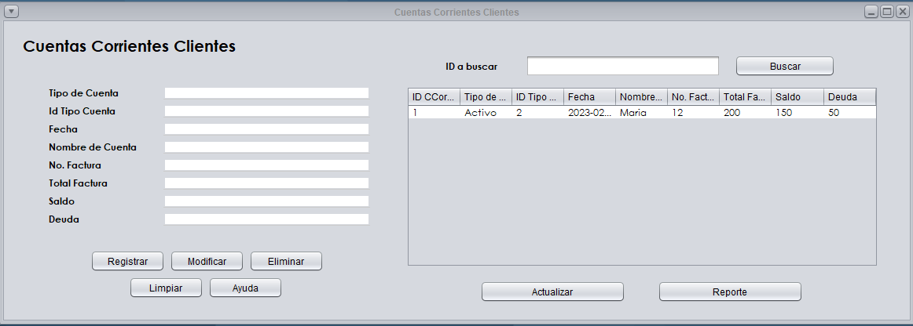

Capacitación Cliente
Mantenimiento de Cuentas Corrientes Clientes
En el mantenimiento de Cuentas Corrientes Clientes se tiene como objeto registrar un nuevo Cliente, sucesivo a eso realizar las siguientes opciones:Modificar
Eliminar
Buscar
Ayuda
Reporte
Para ingresar un nuevo registro debemos dirigirnos al menú de catalogos en el modulo de Cuentas Corrientes y seleccionar la opción de "Mantenimientos", seguidamente la opción de "Mantenimiento Cuentas Corrientes Clientes Despues podremos observar el formulario a llenar para agregar una nueva aplicación.

Despues podremos observar el formulario a llenar para agregar una nueva aplicación.
